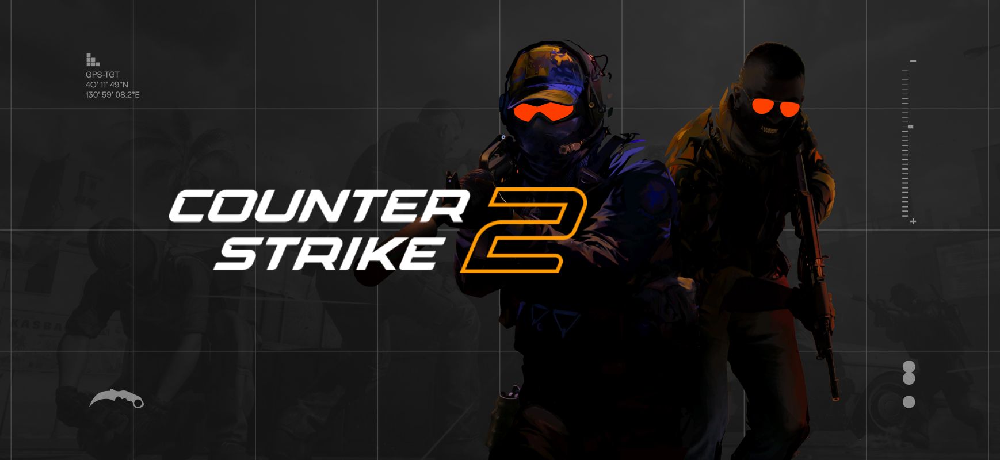
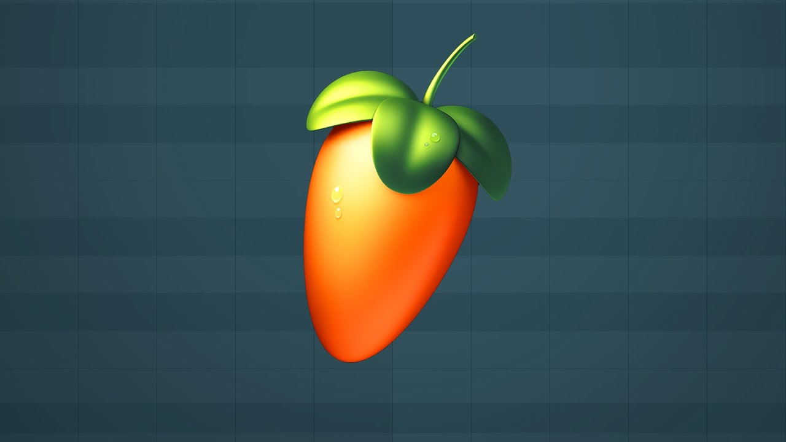

Over mij
Ik ben Bjarne, een gepassioneerde programmeur en gamer. Naast technologie en coderen besteed ik veel van mijn vrije tijd aan gaming en esports. Ik hou ervan mezelf uit te dagen, nieuwe strategieën te ontdekken en mijn vaardigheden continu te verbeteren. Gaming geeft me niet alleen ontspanning, maar ook een gevoel van competitie en teamwork. Daarnast spendeer ik ook heel veel tijd aan muziek, daar kan je beneden meer over lezen.
Gaming / Esports
In mijn vrije tijd bestudeer ik games grondig en neem ik deel aan verschillende tournaments en professionele evenementen. Ik analyseer strategieën van top-spelers, leer van hun speelstijl en pas deze inzichten toe tijdens mijn eigen wedstrijden. Gaming is voor mij zowel een passie als een manier om mijn discipline, reactievermogen en strategisch denken te trainen.
Games die ik op professioneel niveau speel
- Valorant
- League of Legends
- Counter Strike 2
Valorant

Ik ben begonnen met Valorant sinds de Beta release en werd meteen enthousiast door de gelijkenissen met Counter Strike. Sindsdien heb ik me volledig op deze game gefocust, mijn vaardigheden verfijnd en veel tijd besteed aan strategische oefeningen. Ik heb deelgenomen aan tal van lokale en online evenementen, waardoor ik ervaring heb opgedaan tegen competitieve spelers. Valorant daagt mij uit om snel te denken, nauwkeurig te mikken en effectief samen te werken met teamgenoten. Deze game combineert strategie, teamwork en persoonlijke vaardigheid, waardoor het een van mijn favoriete competitieve games is.
League of Legends

Ik speel League of Legends al sinds mijn jeugd en het is altijd een constante passie gebleven. In het begin was ik niet heel sterk, maar door veel oefenen en toewijding heb ik mijn vaardigheden sterk verbeterd. Momenteel neem ik on- en offline deel aan tryouts, werk ik samen met teamgenoten en probeer ik vaak in de top van de ranglijsten te komen. Deze game leert mij geduld, strategisch inzicht en teamcoördinatie, en het blijft een belangrijk onderdeel van mijn vrije tijd.
Counter Strike 2

Net zoals League of Legends speel ik Counter Strike 2 al sinds mijn negende jaar. Vanaf het begin was ik gefascineerd door competitieve shooters en ik ontwikkelde al snel vaardigheden die me in staat stelden om hoog te ranken. Ik heb op jonge leeftijd deelgenomen aan evenementen en gespeeld in teams als fill-speler. Deze game heeft mijn interesse in strategie, precisie en teamwork verder versterkt en blijft een van mijn favoriete competitieve games.
Muziek

Sinds mijn jeugd ben ik gepassioneerd door muziek. Ik werk veel met FL Studio en experimenteer met diverse genres zoals hyperpop, dubstep, rap en elektronische muziek. Muziek biedt mij een creatieve uitlaatklep naast programmeren en gaming, en ik besteed veel tijd aan het componeren, mixen en verbeteren van mijn tracks. Deze passie blijft een belangrijk onderdeel van mijn persoonlijke ontwikkeling en creatieve expressie.